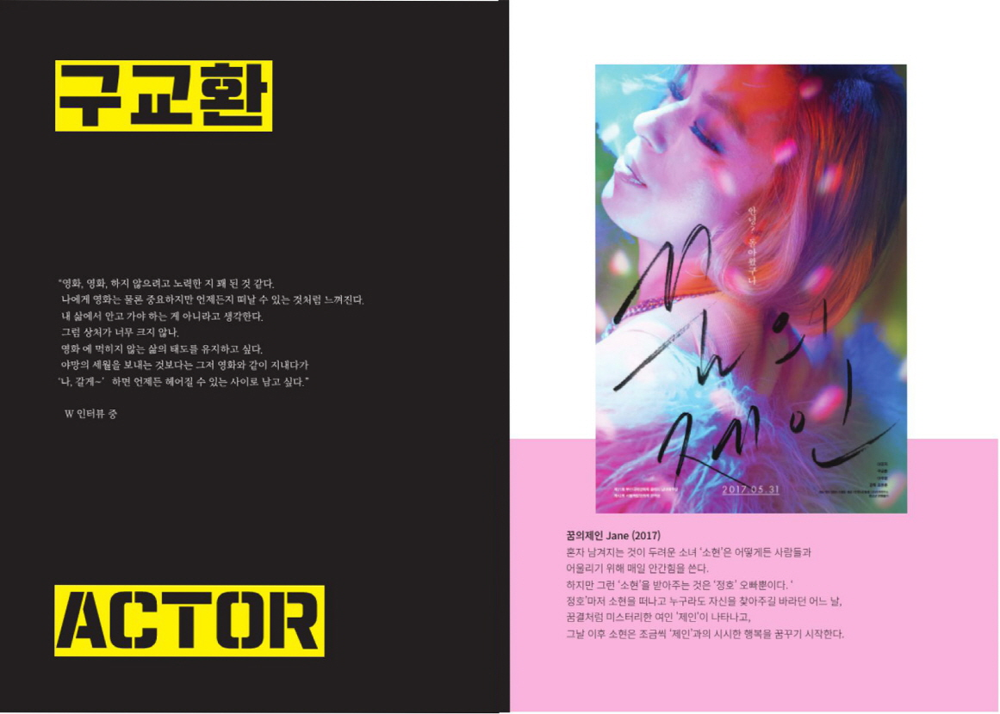
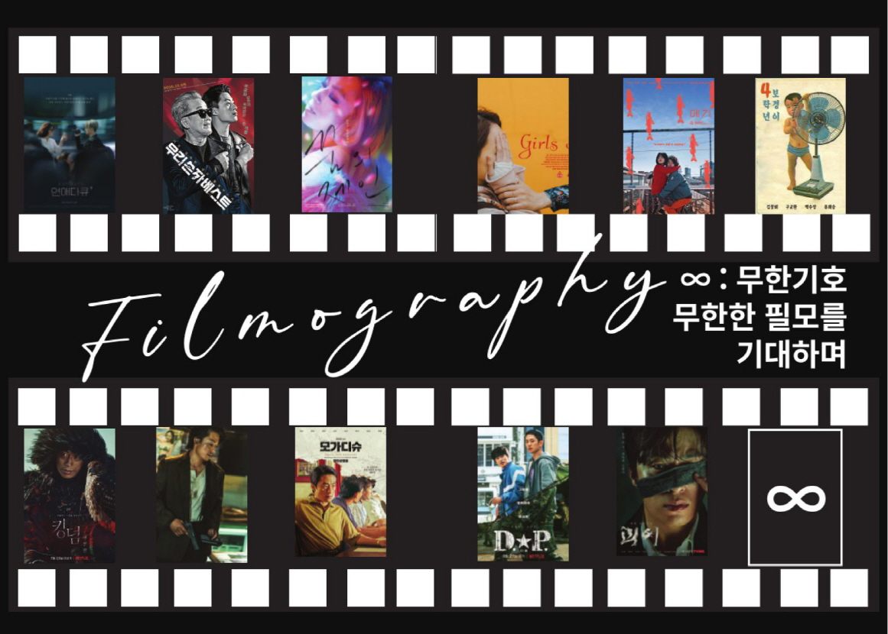
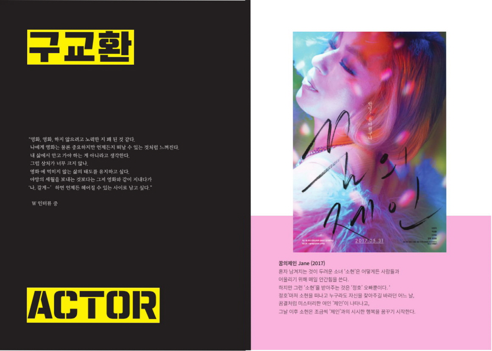
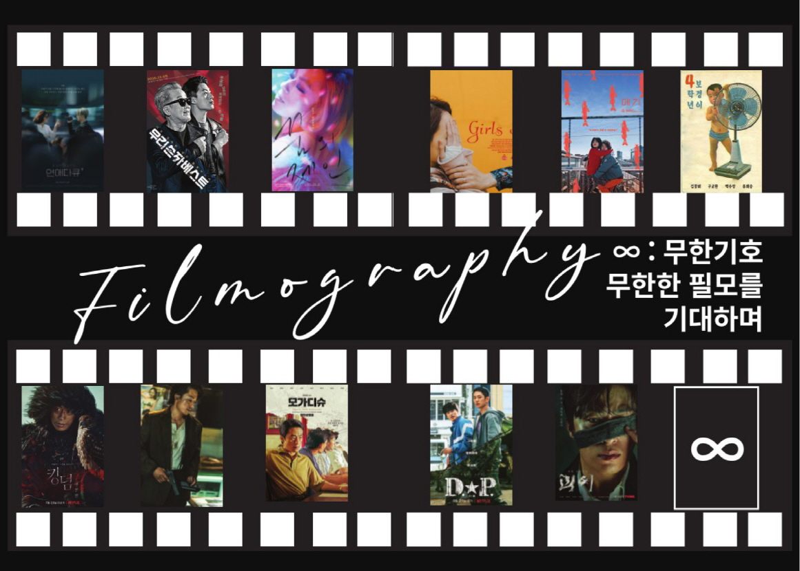
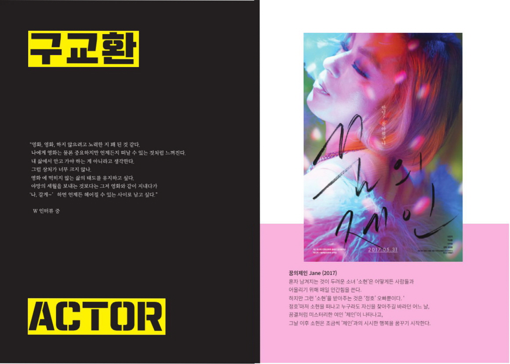
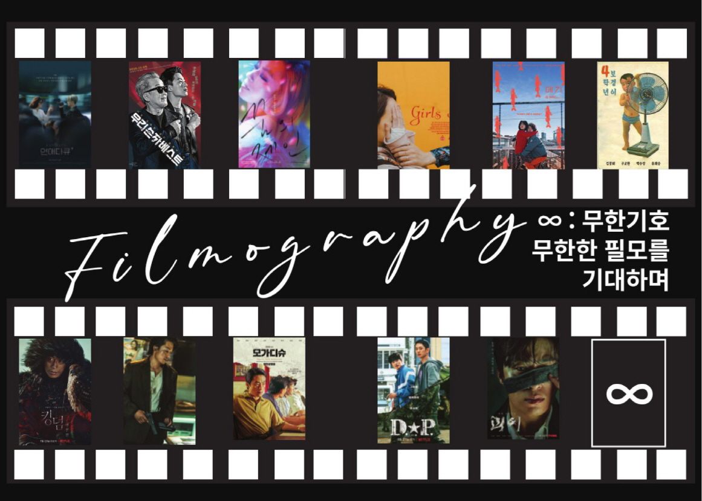

포토샵,인디자인 사용하여 팬 잡지를 만들었습니다
중철 제본 국판 148 X 210mm 24page로 제작 되었으며,
제작기간은 총 2일 입니다.
본잡지는 구교환님의 팬심을 이용한
시각디자인 포트폴리오 용으로 제작되었음을 알려드립니다.
이미지의 출처는 나무액터스 공식홈페이지 또는 블로그를 활용하였으며
구교환님의 인터뷰는 인터넷 기사를 통해 활용했음을 알려드립니다.

